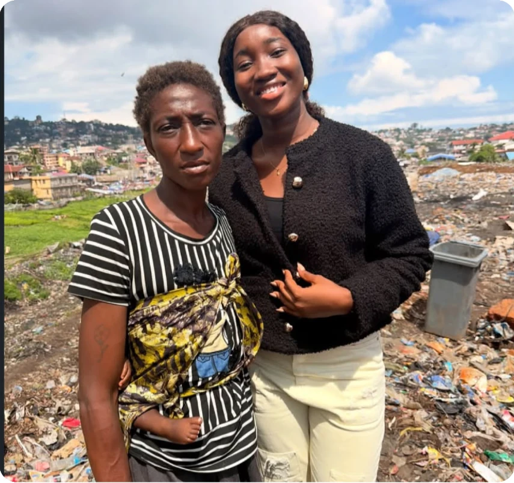

OUR AIM
Supporting people and strengthening communities
Mariyam’s Ways Foundation aims to support vulnerable communities and increase its social impact through humanitarian assistance, education, empowerment and community development.
ABOUT MARIYAM’S WAYS FOUNDATION
Mariyam’s Ways Foundation is a community-focused organization in Sierra Leone working to improve lives through humanitarian assistance, education, empowerment and social-development initiatives.
WHO WE ARE
Mariyam’s Ways Foundation supports vulnerable individuals and communities in Sierra Leone through humanitarian assistance, education and empowerment.
Through outreach, skills development, welfare support and awareness programmes, the Foundation helps people access opportunities and become more independent.

WHAT GUIDES OUR WORK
OUR AIM
Mariyam’s Ways Foundation aims to support vulnerable communities and increase its social impact through humanitarian assistance, education, empowerment and community development.
OUR OBJECTIVES
LEADERSHIP
The Foundation is guided by people committed to supporting vulnerable individuals and strengthening communities.
CEO
Providing leadership and direction for the Foundation’s humanitarian and community development work.
Manager
Supporting the coordination and management of the Foundation’s programmes and community activities.